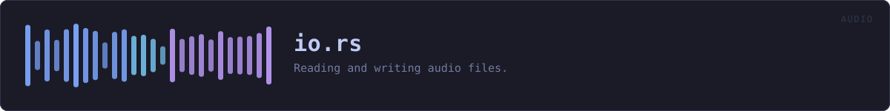

crates/veilvoice-audio/src/io.rs
veilvoice-audio · 527 lines · read the source
Reading and writing audio files.
Decoding goes through symphonia, which is pure Rust and covers WAV, MP3, FLAC, OGG/Vorbis, MP4/AAC and friends without shelling out to a codec library. Writing is WAV only, on purpose: VeilVoice's job is to hand back audio that has not been degraded, and re-encoding to a lossy format after de-identification would throw away quality for no benefit. Callers who want MP3 can transcode with whatever they already trust.
WHAT CALLS WHAT
The functions this file defines, and the calls between them. An edge means the callee's name appears, called, inside the caller's body — a syntactic reading, not a type-resolved one.
The same graph as Mermaid source
%%{init: {"theme":"base","themeVariables":{"background":"#1a1b26","primaryColor":"#1f2335","primaryTextColor":"#c0caf5","primaryBorderColor":"#7aa2f7","secondaryColor":"#16161e","tertiaryColor":"#16161e","lineColor":"#565f89","textColor":"#c0caf5","mainBkg":"#1f2335","nodeBorder":"#7aa2f7","clusterBkg":"#16161e","clusterBorder":"#2f3549","fontFamily":"ui-monospace, SFMono-Regular, Consolas, monospace","fontSize":"14px"}}}%%
flowchart TD
n_preflight(["preflight<br/>pub"])
n_duration_secs(["Audio::duration_secs<br/>pub"])
n_peak(["Audio::peak<br/>pub"])
n_load(["load<br/>pub"])
n_read_up_to["read_up_to"]
n_wav_bytes(["wav_bytes<br/>pub"])
n_save_wav(["save_wav<br/>pub"])
n_load --> n_preflight
n_load --> n_read_up_to
n_save_wav --> n_wav_bytesThis site loads no third-party script, so it cannot run Mermaid; the diagram above is the same nodes and edges drawn by the generator instead. GitHub renders the source below directly.
ITEMS
| Item | Line | Documentation |
|---|---|---|
MAX_DECODED_SAMPLES pub const | 34 | The most decoded audio load will hold, in mono f32 samples. |
preflight pub fn | 64 | Reject a file whose own header carries a value that will crash the decoder, before the decoder is given the file. |
Audio pub struct | 109 | Mono audio in memory. |
Audio::duration_secs pub fn | 118 | Duration in seconds. |
Audio::peak pub fn | 126 | Peak absolute sample value. |
load pub fn | 137 | Decode any supported audio file to mono f32. |
read_up_to fn | 240 | Fill as much of buf as the file has, tolerating short reads. |
wav_bytes pub fn | 261 | Encode mono f32 audio as a 16-bit PCM WAV, in memory. |
save_wav pub fn | 281 | Write mono f32 audio to a 16-bit PCM WAV file. |